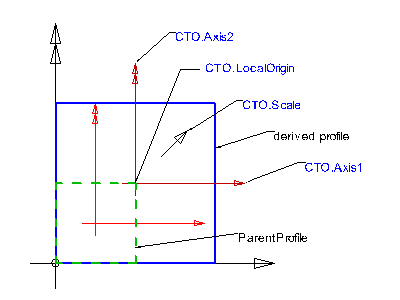
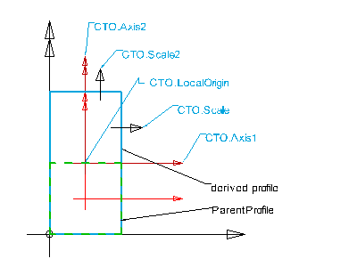
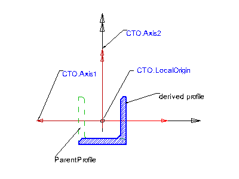

8.15.3.10 IfcDerivedProfileDef
| Définition d'un profil dérivé |
| abgeleitetes Profil |
IfcDerivedProfileDef defines the profile by transformation from the parent profile. The transformation is given by a two dimensional transformation operator. Transformation includes translation, rotation, mirror and scaling. The latter can be uniform or non uniform. The derived profiles may be used to define swept surfaces, swept area solids or sectioned spines.
The transformation effects the position, rotation, mirroring or scale of the profile at the underlying coordinate system, i.e. the coordinate system defined by the swept surface or swept area solid that uses the profile definition. It is the xy plane of either:
- IfcSweptSurface.Position
- IfcSweptAreaSolid.Position
or in case of sectioned spines the xy plane of each list member of IfcSectionedSpine.CrossSectionPositions. The position and potential rotation of the ParentProfile within the underlying coordinate system is taken into consideration before applying the Cartesian transformation operator.
Note, if only mirroring is required, IfcMirroredProfileDef should be used instead.
HISTORY New entity in IFC2x.
Figure 362 illustrates examples of derived profiles.
|

|
Parameter
The IfcDerivedProfileDef
is defined using the IfcCartesianTransformationOperator2D
(CTO), which is applied to the parent profile definition.
Example
The example shows an uniform scaling and a transformation
of an IfcRectangleProfileDef
to match the lower-left cardinal point. The attributes of the CTO are:
Axis1 = NIL (defaults to 1.,0.)
Axis2 = NIL (defaults to 0.,1.)
LocalOrigin = IfcCartesianPoint(<1/2 XDim>,<1/2 YDim>)
Scale = 2.
Note: The ParentProfile has a Position
= IfcCartesianPoint(<1/2 XDim>,<1/2 YDim>) already.
|
|

|
Parameter
The IfcDerivedProfileDef is defined using
non uniform transformationsby applying the IfcCartesianTransformationOperator2DnonUniform
as a subtype of the 2D CTO.
Example
The example shows a non-uniform scaling and a translation of an IfcRectangleProfileDef
to match the lower-left cardinal point. The attributes of the CTO are:
Axis1 = NIL (defaults to 1.,0.)
Axis2 = NIL (defaults to 0.,1.)
LocalOrigin = IfcCartesianPoint(0.,<1/2 YDim)
Scale = 1.
Scale2 = 2.
Note: The ParentProfile has a Position
= IfcCartesianPoint(<1/2 XDim>,<1/2 YDim>) already.
|
|

|
Parameter
The IfcDerivedProfileDef
is defined using mirroring by applying the IfcCartesianTransformationOperator2D
(CTO) to the parent profile.
Example
The example shows a mirroring of an IfcLShapeProfileDef
to match the centre cardinal point. The attributes of the CTO are:
Axis1 = (-1.,0.)
Axis2 = NIL (defaults to 0.,1.)
LocalOrigin = IfcCartesianPoint(0.,0.)
Scale = NIL (defaults to 1.)
Note: The ParentProfile has a Position = IfcCartesianPoint(0.,0.).
This example is for illustration only.
If the transformation results only in mirroring like shown in the example, then
IfcMirroredProfileDef should be used instead of IfcDerivedProfileDef.
|
Note: The following color map applies:
- black coordinate axes show the
underlying coordinate system of the swept surface, swept area solid, or
sectioned spine
- red coordinate axes
show the position coordinate system of the parent profile
- brown coordinate axes
show the position coordinate system of the derived profile
|
|
Figure 362 — Derived profile |
XSD Specification:
<xs:element name="IfcDerivedProfileDef" type="ifc:IfcDerivedProfileDef" substitutionGroup="ifc:IfcProfileDef" nillable="true"/>
<xs:complexType name="IfcDerivedProfileDef">
<xs:complexContent>
<xs:extension base="ifc:IfcProfileDef">
<xs:sequence>
<xs:element name="ParentProfile" type="ifc:IfcProfileDef" nillable="true"/>
<xs:element name="Operator" type="ifc:IfcCartesianTransformationOperator2D" nillable="true" minOccurs="0"/>
</xs:sequence>
<xs:attribute name="Label" type="ifc:IfcLabel" use="optional"/>
</xs:extension>
</xs:complexContent>
</xs:complexType>
EXPRESS Specification:
|
ENTITY IfcDerivedProfileDef
|
|
|
| InvariantProfileType | : | SELF\IfcProfileDef.ProfileType = ParentProfile.ProfileType; |
|
 EXPRESS-G diagram
EXPRESS-G diagram
Attribute Definitions:
| ParentProfile | : | The parent profile provides the origin of the transformation. |
| Operator | : | Transformation operator applied to the parent profile. |
| Label | : | The name by which the transformation may be referred to. The actual meaning of the name has to be defined in the context of applications. |
Formal Propositions:
| InvariantProfileType | : | The profile type of the derived profile shall be the same as the type of the parent profile, i.e. both shall be either AREA or CURVE. |
Inheritance Graph:
|
ENTITY IfcDerivedProfileDef
|
 Link to this page
Link to this page